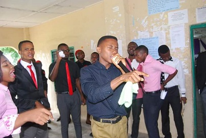
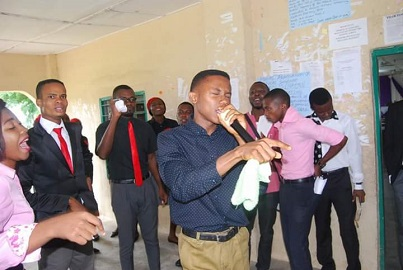
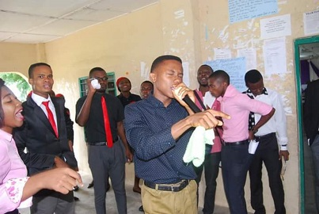
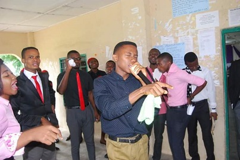

 

Edikan Ukpong is a multifaceted upcoming teacher, leader, media specialist as well as a revivalist. He has a strong sense of passion and motivation. Edikan has great passion for teaching, media practice, business and pastoring.
Edikan Ukpong (Photo Credit: Passion Studio, Location: Obio Akpa, Akwa Ibom)
Teaching gives him the opportunity to share knowledeg with people. In addition to deriving joy from teaching pupils, kids and lecturing; he is enthusiastic in other forms of teaching such as presenting conferences, leadership talkshows, personal development talks among others. Working in the media is the platfrom from which he wants to reach the world.
Understanding media, from the perspective of a mass communication expert (B.Sc, M.Sc), makes his communication and teaching insightful and also very impactful. He also runs some video tutorals and trainings. This has had great impact on other areas of his interest.
Edikan Ukpong (Photo Credit: Donald (One of his mentees), Location: GMMP Certificate Award Day, Imo State University, Owerri)
Edikan Ukpong (Photo Credit: Passion Studio, Location: After a business meeting in Uyo, Akwa Ibom)
To Edikan, business is the piece that joins everyother area of his interest together. Coming from a low-income earning family, which relied solely on monthly salary, Edikan at his tender age observed the disadvantage of not having a business or investment. Edikan currently leads a team of over 150 upcoming business personal where they share ideas about business in the 21st century.
Edikan sees preaching as the blood line of the other passions. Being dedicated to the message of reconciling men ot God, Edikan believes that everyone should have an opportunity to encounter the transfroming power of God through His word. Edikan shares the word of God to family, friends and people he meets in a contemporary approach. He represents God as a loving father who is not in the business of condemning people but transforming.
Edikan Ukpong (Photo Credit: Micah, Location: Chapel of Praise, Obio Akpa, Akwa Ibom)
Edikan has earned himself educational qualification to support his passion and work expereince in most of the areas of his passion. He bags several degrees in teaching, media practice and pastoring for now. He is currently taking some business courses online and the certifactes with be added to the list as soon as possible. Edikan believes that passion and experience backed up with the neccessary and relevant qualifications are the wings to a success career and business.